Чертовы Ворота - Пик Чекановского. Водопады. (10-12 июня
2007)
|
Классику жанра мы уже проходили (Слюдянка - ГМС - Пик Черского,
озеро Сердце) и летом, и зимой. Однако район Хамар-Дабана за метеостанцией
обширен и интересен - старинный тракт, озера, перевалы, вершины,
водопады и тропы, тропы, тропы... А потому идем в разведку...
А начинается все как всегда - от вокзала. Договорился с Андреем,
хозяином российского внедорожника, довезет до 4-го брода. Встретили
Оксану и ее сестру Любу, загрузились, поехали. Экономия 2х часов
"дурного" пешеходства :)
Дорога вдоль речки Слюдянки завалена мелкими деревьями - в прошлую
субботу был снегопад, вот он и наломал дров. Зато воздух напоён
ароматами, какое-то буйство запахов, после города очень резко
ощущается. Преимущества захода вечером - плюс одна ночевка на
свежем воздухе, да и завтра меньше идти. Поставили палатку за
6-м бродом, но не успели развести костер, дождь начался. Газовая
горелка - и нет проблем с горячим ужином. По палатке барабанят
капли дождя, речка шумит. Говорят белый шум обладает лечебными
свойствами, все может быть, выспались отлично и то хорошо :)
10 июня, день первый. Заход.
Дождя то нет, то есть. Девчонки обновляют непромокаемые
штаны, дождевики и накидки на рюкзаки. Подготовились основательно,
синоптикам теперь доверяем. Встречные мужики советуют повернуть
обратно, говорят, что там снег. Да его и так с утра видно на верхушках
хребтов. Да, погода - не вспотеешь. А это тоже хорошо при бодром
шаге. Вот только скользкие бревна через реку иногда вызывают задержки.
На подъеме от Горелой поляны до Казачьей уже стал появляться снежок,
дальше больше, но видно, что тает сразу. На тропе лужи и слякоть.
Зашли на метеостанцию погреться на полчасика. Знакомые улыбающиеся
лица - Андрей, Сергей и Денис. Что-то застольно и весело отмечают
с остальными пришельцами. Или они с ними :)
Но нам дорога дальше, согласно плану тренировки
отрабатываем переход через голец в мерзкую погоду. На серпантине
еще снежники попадаются, а уж свежего мокрого снега полным полно.
У меня в кроссовках уже захлюпало, все-таки резиновые сапоги в
июне вещь нужная, в такую погоду в них комфортнее и дальше. Ну
да нам сегодня далеко и не надо - спускаемся к ручью Посетительскому,
переходим и ищем поляну. Тропинки здесь по совместительству еще
и ручейки, течет все и везде. Вроде бы мокрые только ноги, но
температуре около 0 градусов, это чувствительно.
|
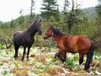 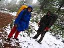 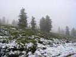 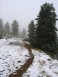 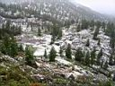
|
Нашли местечко, воткнули палатку. Ситуацию исправляют сухие вещи,
горелка и кружечка самогона. После ужина все дружно и быстро вырубились,
хотя время было всего 5 вечера, погода наверное такая :) В десятом
часу проснулись, чай попили и опять спать, а чего делать - дождь
шпарит без передыху ...
11 июня, день второй. Перевал Чертовы Ворота
- Пик Чекановского.
Однако, выспались за неделю. Дождя нет, облачность
высокая. Наконец-то развели костер и варим нормальную походную
еду - суп из пакетов. Сбор нужных в дороге вещей и выход в 11
часов. Тропа еще немного спускается и едет на подъем, а ручьи
по ней так и текут. Встречаем людей, люди живут в палатках и в
зимовье Кяхта, которое где-то тут есть. Подходы к Чертову озеру
и перевалу ведут через болотца. Местность мы так и назвали - Чертово
болото. Вот и перевал, а вот и озеро. Высота 1730 м. Приличный
тур на перевале добавился еще несколькими камнями.
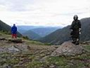 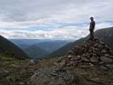 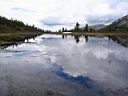 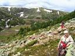
Теперь едем на восток - там отлично виден перевал
Четырех. Правда тропа к нему едет вдоль заболоченного лога, да
еще и частично под снежниками, так что решили траверсом слева
на перевал выйти. Там хоть и посложнее по камням прыгать, зато
сухо. На перевале Четырех было всего три человека, но если посчитать
еще и котелок с борщом, то название соответствует. Люди решили
идти в Кругосветку, это туда же, куда и нам, только до самого
Байкала.
Обходим с северо-востока шарообразную гору 2002м.
После большого снежника выходим на гребень Безымянного гольца
и медленно и верно идем к Чекановскому. Под ногами влажный и мягкий
мох, следы на нем остаются надолго, жалко топтать, но тропы нигде
не видно. Справа южные склоны и ущелья притоков Утулика, далеко
внизу зеленый ковер елок и кедров. Слева хорошо виден пик Черского
и долина реки Безымянной. Под ногами заросли цветущей кашкары,
а бутоны горечавки растут прямо из земли.
|
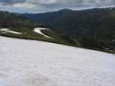 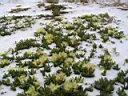 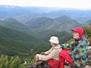 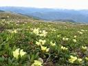 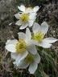
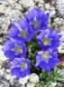 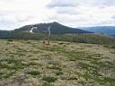 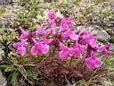 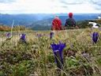 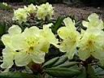
Вышли еще на какой-то безымянный перевал, небольшой турчик, дальше
появилась тропинка. Еще немного подняться и вот уже далеко-далеко
видно озеро Сердце в цирке под Черским. Люба дальше идти отказалась,
для первого раза вполне достаточно. Вдвоем с Оксаной минут через
40 поднимаемся по тропе на вершину.
Пик Чекановского, 2068 м. Деревянный триангулятор, маленький тур,
чисто и скромно. Южный и западный склоны очень крутые. Над пиком
зависла темная туча, гора Ородруин какая-то :) Половина пятого,
пора обратно. |
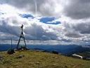 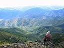 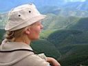 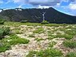
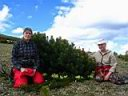 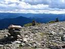 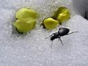 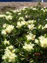
Обратно идется навстречу солнцу, тепло и даже жарко. Оксана увидела
зайца, интересно, чего он тут грызет. Я встретил куропатку, она
не улетала, а забавно убегала, вытянув вперед голову.
Поднялись на вершину 2002 м, к Чертовым Воротам пойдем здесь. Как
оказалось, тут спускаться легче, после высокого тура на гребне появилась
набитая тропа вниз. Слева обрывистые склоны в сторону реки Спусковой,
там же виден небольшой серпантин Старокомарского тракта, ведущего
вниз с Чертовых Ворот. Справа заболоченная долина речки Каменки
(или ее притока). |
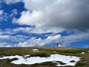 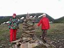 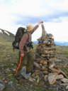 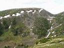
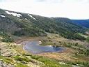 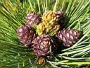 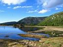 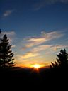 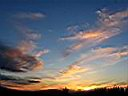
Спустились к озеру, купаться не стали, холодновато еще. Вниз по
журчащим тропинкам доходим до своей палатки. 8:30 вечера. Костер,
ужин, заслуженный отдых. На завтра программа не менее насыщенная
-
водопады на Посетительском, Каменке, Подкомарной... |
Июнь 2007
Алексей Белокрылов
Фотографии автора :)
|